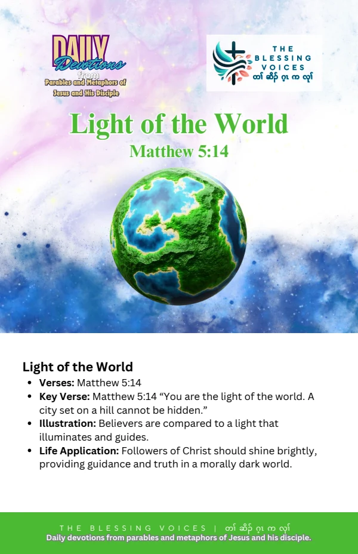

Introduction
Read this English paraphrase of the biblical teaching alongside the original companion booklet. Context notes, devotional applications, reflection questions, and prayer are study aids rather than additional biblical text.
The Bible Story
Jesus called his disciples the light of the world. He spoke of a city on a hill that cannot be hidden and a lamp placed on a stand to give light. He urged them to let their light shine so that others would see their good works and glorify their Father in heaven. This is a paraphrase of Matthew 5:14–16.
Historical and Biblical Context
CONTEXT & DEVOTIONAL INTERPRETATIONThis study concerns Jesus’ words to his disciples in Matthew. John 8:12 also uses light language when Jesus describes himself, but that is a distinct saying in a different setting.
Spiritual Lessons
CONTEXT & DEVOTIONAL INTERPRETATIONThe teaching connects visible conduct with praise directed to God. Its focus does not require seeking admiration for oneself.
Practical Life Applications
CONTEXT & DEVOTIONAL INTERPRETATIONDo a concrete act of service with humility. Consider how your words and actions affect the way others experience Christian faith.
Reflection Questions
- What result does Jesus desire when people see good works?
- How can visible service remain humble?
- What act of kindness could you put into practice today?
Closing Prayer
Lord God, help us understand your Word and receive it with humility. Guide our choices and teach us to live with faith, wisdom, and love. Amen.
Continue your reflection.
Your free companion study booklet.
Download Free Booklet ↓PDF · Free download